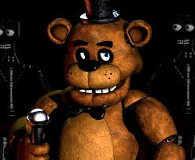

definicion de toda la saga de video juegos
INDICE
Five Nights at Freddy's es un videojuego de terror que consiste en asumir el rol de un guardia nocturno de uniforme morado en la pizzería Freddy Fazbear's Pizza, un restaurante ficticio similar a Chuck E. Cheese's y ShowBiz Pizza Place. Este juego fue creado por Scott Cawthon en el 2014, tras ser criticado por su primer juego: CHIPPER & sons. Gracias a esta crítica podemos jugar este famoso juego.
¡Gracias por ver!
